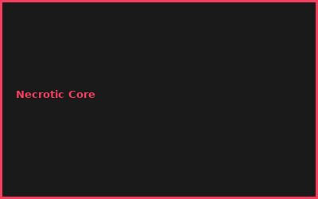
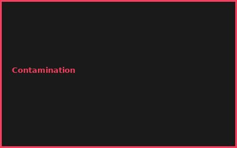
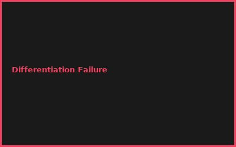
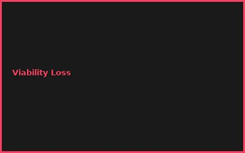

⚠️ Sicherheitshinweis (redaktionell ergänzt):
Dieser Artikel ist eine konzeptionelle, edukative Übersicht über Organoid-Forschung — keine Heimlabor-Anleitung. Arbeit mit humanen Zelllinien erfordert ein lizenziertes Zellkultur-Labor, institutionelle Ethik-/Biosicherheitsprüfung (z. B. IRB) und sterile Fachtechnik.
Kapitel 1: iPSC Differentiation
- Induced Pluripotent Stem Cells (iPSC)
- Neural Induction Protocols
- Neuroectodermal Commitment
- Growth Factor Signaling (BMP, Wnt)
Kapitel 2: 3D Culture Systems
# Brain Organoid Culture
# Self-organizing 3D systems
# Bioreactor conditions
temperature = 37°C
CO2 = 5%
medium_refresh = every 3-4 days
culture_duration = 60+ days
Kapitel 3: Neural Network Formation
- Neurite Outgrowth
- Synaptogenesis & Circuit Formation
- Spontaneous Activity Patterns
- Calcium Imaging & Electrophysiology
Kapitel 4: Regional Specification
- Cerebral vs. Cerebellar Organoids
- Regional Patterning Signals
- Developmental Stage Modeling
- Cell Type Diversity
Kapitel 5: Characterization
- Single-Cell RNA-Seq (scRNAseq)
- Immunofluorescence Staining
- Multi-Electrode Arrays (MEA)
- Structural Imaging (Confocal)
Kapitel 6: Applications & Disease Modeling
- Developmental Neurobiology Research
- Disease Modeling (Autism, Schizophrenia)
- Drug Screening & Toxicology
- Regenerative Medicine
💡 PRO-TIPPS
🎯 Tipp: kommerziellen iPSC starten
Problem: Reprogramming = 6+ Monate | Lösung: Kaufen = sofort einsatz
💰 BUDGET-HACKS (92% SPAREN!)
💰 Hack: DIY Bioreactor + iPSC
Original: Commercial Organoid Service: €50K+ | Hack: DIY mit gekauften iPSCs: €4K | Einsparnis: 92%
⚠️ FEHLER
❌ Fehler: Hypoxia Necrosis Center
Was passiert: Organoid sterben in der Mitte | ✅ Lösung: Gute Bioreactor Perfusion
🌐 COMMUNITY
International Society for Stem Cell Research, Organoid Network, Neuroscience Society
📸 Fehler-Galerie



